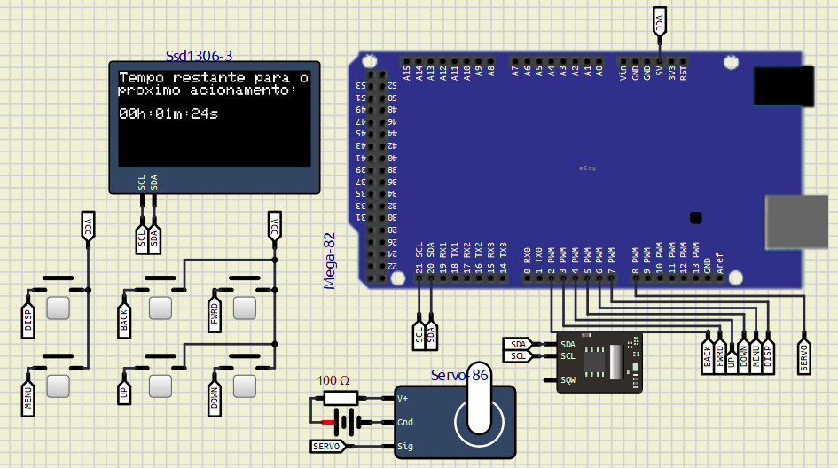
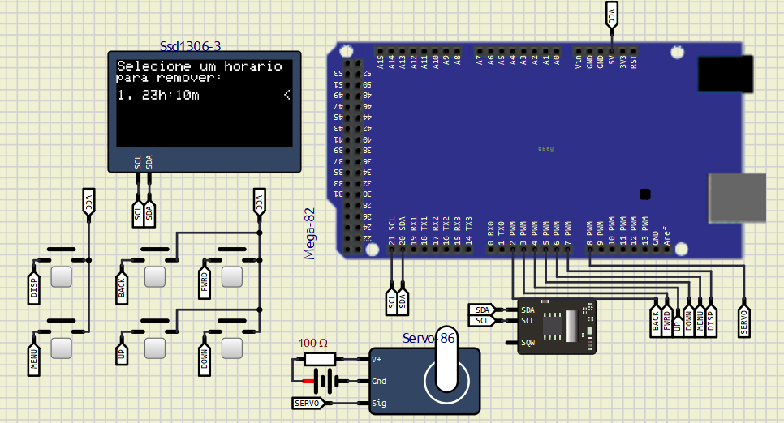
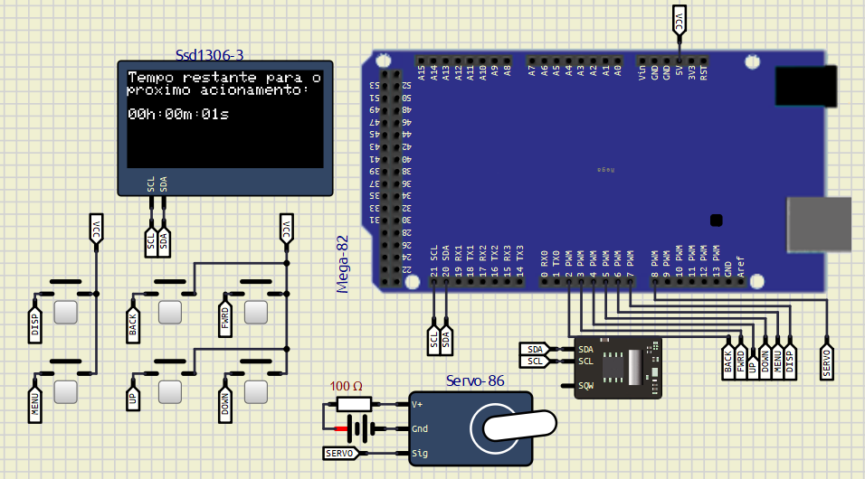

A ideia é criar um alimentador de pets programável, no qual é possível indicar os horários de alimentação e a quantidade de tempo que a porta de vazão do alimentador ficará aberta, possibilitando dosar a quantidade de comida despejada.
O código em questão foi contruído com base no seguinte setup:
Simulador utilizado: SimulIDE
Ao iniciar o sistema pela primeira vez, verá a seguinte tela:
Como não há horários registrados na memória, é necessário configurar um primeiro.
Primeiramente, vamos ao menu através do botão MENU:

Agende um horário para a rotina de alimentação na opção 2. Aparecerá a seguinte tela:

Após o agendamento, será direcionado para a tela de apresentação do tempo restante para o próximo acionamento. 
Caso queira remover algum agendamento, vá ao menu e escolha a opção 3. Aparecerá a tela: 
Por fim, uma vez que o horário agendado mais próximo for atingido, a rotina de alimentação será iniciada e o mesmo horário reagendado para o próximo dia.

O sistema tem preservamento de memória e autoconfiguração, logo, as configurações do usuário permanecem após a reinicialização da placa, e caso não existam, serão configuradas automaticamente (se necessário).
Atentar também ao botão forward no simulador, que por algum motivo, costuma aparecer desconectado.